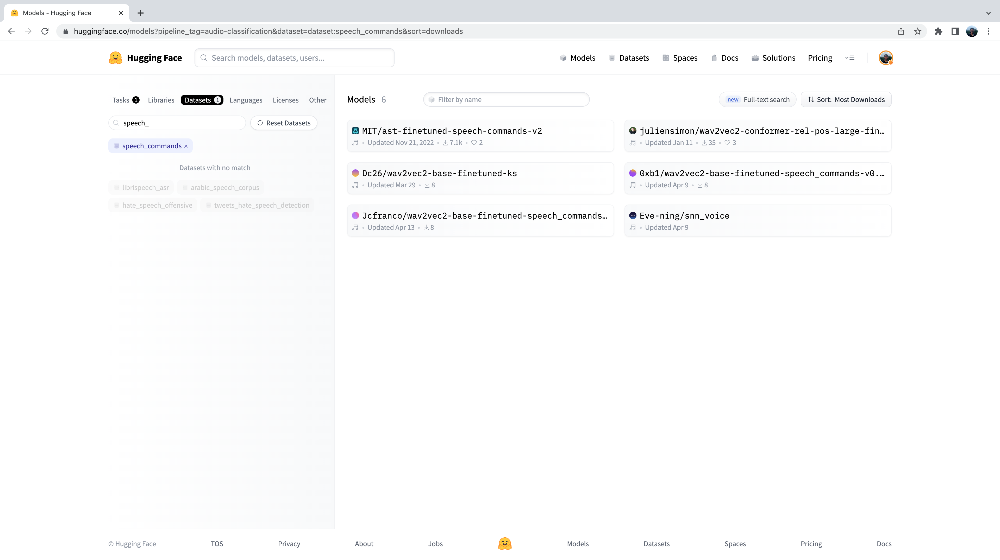

Audio课程（四）- 构建音频流派分类器
转载自：https://huggingface.co/learn/audio-course/en/
Audio课程（四）- 构建音频流派分类器
音频分类是 Transformer 在音频和语音处理中最常见的应用之一。与机器学习中的其他分类任务一样，此任务涉及根据录音的内容为其分配一个或多个标签。例如，就语音而言，我们可能想要检测何时说出“嘿 Siri”等唤醒词，或者从“今天天气怎么样？”等口头查询中推断出“温度”等关键词。环境声音提供了另一个例子，我们可能希望自动区分“汽车喇叭”、“警笛”、“狗叫”等声音。
用于音频分类的预训练模型和数据集
Hugging Face Hub 拥有 500 多个用于音频分类的预训练模型。在本节中，我们将介绍一些最常见的音频分类任务，并为每个任务建议适当的预训练模型。使用pipeline()类，模型和任务之间的切换非常简单 - 一旦您知道如何对一个模型使用pipeline() ，您就可以将其用于 Hub 上的任何模型，无需更改代码！这使得pipeline()类的实验变得非常快，让您可以快速选择最适合您需求的预训练模型。
在我们讨论各种音频分类问题之前，让我们快速回顾一下通常使用的Transformer架构。标准音频分类架构是由任务的性质决定的；我们想要将音频输入序列（即我们的输入音频数组）转换为单类标签预测。仅编码器模型首先通过将输入传递给transformer块，将输入音频序列映射为隐藏状态表示序列。然后，通过对隐藏状态取平均值，并将结果向量传递给线性分类层，将隐藏状态表示的序列映射到类标签输出。因此，倾向于使用仅编码器模型进行音频分类。
仅解码器模型给任务带来了不必要的复杂性，因为它们假设输出也可以是一系列预测（而不是单个类标签预测），因此生成多个输出。因此，它们的推理速度较慢并且往往不被使用。由于同样的原因，编码器-解码器模型在很大程度上被省略。这些架构选择类似于 NLP 中的架构，其中BERT等纯编码器模型更适合序列分类任务，而 GPT 等纯解码器模型则保留用于序列生成任务。
现在我们已经回顾了音频分类的标准Transforme架构，让我们跳入音频分类的不同子集并涵盖最流行的模型！
1.Transformers Installation
在撰写本文时，音频分类管道所需的最新更新仅在🤗 Transformers 存储库的main版本上，而不是最新的 PyPi 版本。为了确保我们在本地拥有这些更新，我们将使用以下命令从main分支安装 Transformers：
1 | pip install git+https://github.com/huggingface/transformers |
2.Keyword Spotting 关键词发现
关键词识别 (KWS) 是识别口语中的关键词的任务。可能的关键字集形成预测的类标签集。因此，要使用预先训练的关键字识别模型，您应该确保您的关键字与模型预先训练的关键字相匹配。下面，我们将介绍两个用于关键词识别的数据集和模型。
Minds-14
让我们继续使用您在上一单元中探索过的相同MINDS-14数据集。如果您还记得的话，MINDS-14 包含人们用多种语言和方言向电子银行系统提问的录音，并且每个录音都有intent_class 。我们可以根据通话意图对录音进行分类。
1 | from datasets import load_dataset |
我们将加载检查点，这是一个 XLS-R 模型，在 MINDS-14 上微调了大约 50 个 epoch。它在验证集上对 MINDS-14 中的所有语言实现了 90% 的准确率。
1 | from transformers import pipeline |
最后，我们可以将样本传递到分类管道来进行预测：
1 | classifier(minds[0]["audio"]) |
Output: 输出：
1 | [ |
我们已确定该通话的目的是支付账单，概率为 96%。您可以想象这种关键字识别系统被用作自动呼叫中心的第一阶段，我们希望根据客户的查询对传入的客户呼叫进行分类，并相应地为他们提供相关支持。
语音命令
语音命令是口语词的数据集，旨在评估简单命令词的音频分类模型的表现。该数据集包含 15 个关键字类别、一个用于沉默的类别和一个包含误报的未知类别。这 15 个关键字是通常在设备上设置中用于控制基本任务或启动其他进程的单个单词。
类似的模型正在您的手机上持续运行。在这里，我们没有单一的命令词，而是特定于您的设备的“唤醒词”，例如“嘿 Google”或“嘿 Siri”。当音频分类模型检测到这些唤醒词时，它会触发您的手机开始监听麦克风并使用语音识别模型转录您的语音。
音频分类模型比语音识别模型小得多、轻得多，通常只有几百万个参数，而语音识别则需要数亿个参数。因此，它可以在您的设备上连续运行，而不会耗尽电池！只有当检测到唤醒词时，才会启动更大的语音识别模型，然后再次关闭。我们将在下一个单元中介绍用于语音识别的变压器模型，因此在课程结束时，您应该拥有构建自己的语音激活助手所需的工具！
与 Hugging Face Hub 上的任何数据集一样，我们可以感受到它所呈现的音频数据类型，而无需下载或提交内存。前往集线器上的语音命令数据集卡后，我们可以使用数据集查看器滚动浏览数据集的前 100 个样本，收听音频文件并检查任何其他元数据信息：
数据集预览是在投入使用之前体验音频数据集的绝佳方式。您可以选择 Hub 上的任何数据集，滚动样本并收听不同子集和分割的音频，衡量它是否是满足您需求的正确数据集。选择数据集后，加载数据就很简单了，以便您可以开始使用它。
让我们完全做到这一点并使用流模式加载语音命令数据集的示例：
1 | speech_commands = load_dataset( |
我们将加载在命名空间下的语音命令数据集上微调的官方音频频谱图转换器检查点:
1 | classifier = pipeline( |
Output: 输出：
1 | [{'score': 0.9999892711639404, 'label': 'backward'}, |
看起来这个例子很有可能包含“backward”这个词。我们可以听一下示例并验证这是正确的：
1 | from IPython.display import Audio |
现在，您可能想知道我们如何选择这些预先训练的模型来向您展示这些音频分类示例。事实是，为您的数据集和任务找到预先训练的模型非常简单！我们需要做的第一件事是前往 Hugging Face Hub 并单击“模型”选项卡： https://huggingface.co/models
这将显示 Hugging Face Hub 上的所有模型，按过去 30 天内的下载量排序：

您会注意到，在左侧，我们有一系列选项卡，我们可以选择这些选项卡来按任务、库、数据集等过滤模型。向下滚动并从音频任务列表中选择任务“音频分类”：

现在，我们在 Hub 上看到了 500 多个音频分类模型的子集。为了进一步细化此选择，我们可以按数据集过滤模型。单击“数据集”选项卡，然后在搜索框中输入“speech_commands”。当您开始输入时，您将看到speech_commands的选择出现在搜索选项卡下方。您可以单击此按钮将所有音频分类模型过滤为在语音命令数据集上微调的模型：

伟大的！我们看到，我们有 6 个预训练模型可用于此特定数据集和任务。您将认识到这些模型中的第一个是我们在上一个示例中使用的音频频谱图转换器检查点。在 Hub 上过滤模型的过程正是我们选择要向您展示的检查点的过程！
3.语言识别
语言识别 (LID) 是从候选语言列表中识别音频样本中所说的语言的任务。 LID 可以成为许多语音管道的重要组成部分。例如，给定未知语言的音频样本，LID 模型可用于对音频样本中所说的语言进行分类，然后选择在该语言上训练的适当语音识别模型来转录音频。
FLEURS（语音通用表示的少样本学习评估
FLEURS（语音通用表示的少样本学习评估）是一个用于评估 102 种语言的语音识别系统的数据集，其中包括许多被归类为“低资源”的语言。查看 Hub 上的 FLEURS 数据集卡并探索现有的不同语言： google/fleurs 。你能在这里找到你的母语吗？如果不是，最密切相关的语言是什么？
让我们使用流模式从 FLEURS 数据集的验证拆分中加载一个样本：
1 | fleurs = load_dataset("google/fleurs", "all", split="validation", streaming=True) |
现在我们可以加载我们的音频分类模型。为此，我们将使用在 FLEURS 数据集上微调的Whisper版本，该数据集是目前 Hub 上性能最高的 LID 模型：
1 | classifier = pipeline( |
然后我们可以将音频传递给分类器并生成预测：
1 | classifier(sample["audio"]) |
Output: 输出：
1 | [{'score': 0.9999330043792725, 'label': 'Afrikaans'}, |
我们可以看到，该模型预测音频为南非荷兰语的概率极高（接近 1）。 FLEURS 数据集包含来自多种语言的音频数据 - 我们可以看到可能的类别标签包括北索托语、冰岛语、丹麦语和粤语等。您可以在此处的数据集卡上找到完整的语言列表： google/fleurs 。
交给你了！您还可以在 Hub 上找到 FLEURS LID 的哪些其他检查点？他们在引擎盖下使用什么型号的变压器？
4.零样本音频分类
在传统的音频分类范例中，模型从一组预定义的可能类别中预测类别标签。这对使用预训练模型进行音频分类造成了障碍，因为预训练模型的标签集必须与下游任务的标签集相匹配。对于前面的 LID 示例，模型必须预测其训练所依据的 102 种语言类别之一。如果下游任务实际上需要 110 种语言，则模型将无法预测 110 种语言中的 8 种，因此需要重新训练才能实现完全覆盖。这限制了音频分类任务的迁移学习的有效性。
零样本音频分类是一种采用在一组标记示例上训练的预训练音频分类模型的方法，并使其能够从以前未见过的类中对新示例进行分类。让我们看看如何实现这一目标！
目前，🤗 Transformers 支持一种零样本音频分类模型： CLAP 模型。 CLAP 是一种基于转换器的模型，它将音频和文本作为输入，并计算两者之间的相似度。如果我们传递与音频输入强相关的文本输入，我们将获得很高的相似度得分。相反，传递与音频输入完全无关的文本输入将返回较低的相似度。
我们可以通过将一个音频输入传递给模型和多个候选标签来使用这种相似性预测进行零样本音频分类。该模型将为每个候选标签返回相似度得分，我们可以选择得分最高的标签作为我们的预测。
让我们举一个例子，其中我们使用来自环境语音挑战 (ESC)数据集的一个音频输入：
1 | dataset = load_dataset("ashraq/esc50", split="train", streaming=True) |
然后，我们定义候选标签，它们形成可能的分类标签集。该模型将返回我们定义的每个标签的分类概率。这意味着我们需要先验地知道分类问题中可能的标签集，以便正确的标签包含在该集中，从而分配一个有效的概率分数。请注意，我们可以将完整的标签集传递给模型，也可以将我们认为包含正确标签的手动选择的子集传递给模型。传递完整的标签集将更加详尽，但会以较低的分类精度为代价，因为分类空间更大（假设正确的标签是我们选择的标签子集）：
1 | candidate_labels = ["Sound of a dog", "Sound of vacuum cleaner"] |
我们可以运行模型来找到与音频输入最相似的候选标签：
1 | classifier = pipeline( |
Output: 输出：
1 | [{'score': 0.9997242093086243, 'label': 'Sound of a dog'}, {'score': 0.0002758323971647769, 'label': 'Sound of vacuum cleaner'}] |
好吧！该模型似乎非常有信心我们听到了狗的声音 - 它以 99.96% 的概率预测它，所以我们将以此作为我们的预测。让我们通过听音频样本来确认我们是否正确（不要将音量调得太高，否则你可能会跳起来！）：
1 | Audio(audio_sample, rate=16000) |
完美的！我们听到了狗吠的声音🐕，这与模型的预测相符。尝试不同的音频样本和不同的候选标签 - 您能否定义一组标签，在 ESC 数据集中提供良好的泛化能力？提示：考虑在哪里可以找到有关 ESC 中可能的声音的信息，并相应地构建标签！
您可能想知道为什么我们不将零样本音频分类管道用于所有音频分类任务？似乎我们可以通过先验定义适当的类标签来对任何音频分类问题进行预测，从而绕过我们的分类任务需要匹配模型预训练的标签的约束。这归结为零样本管道中使用的 CLAP 模型的性质：CLAP 是在通用音频分类数据上进行预训练的，类似于 ESC 数据集中的环境声音，而不是像我们在LID 任务。如果你用英语和西班牙语给它语音，CLAP 就会知道这两个例子都是语音数据🗣️ 但它无法像专用 LID 模型那样区分语言。
5.What next?
我们介绍了许多不同的音频分类任务，并提供了最相关的数据集和模型，您可以从 Hugging Face Hub 下载这些数据集和模型，并使用pipeline()类在几行代码中使用。这些任务包括关键词识别、语言识别和零样本音频分类。
但是如果我们想做一些新的事情怎么办？我们在语音处理任务上进行了大量工作，但这只是音频分类的一方面。音频处理的另一个流行领域涉及音乐。虽然音乐与语音有着本质上不同的特征，但我们已经学到的许多相同原理可以应用于音乐。
在下一节中，我们将逐步指导您如何使用 🤗 Transformers 来微调 Transformer 模型来完成音乐分类任务。最后，您将拥有一个经过微调的检查点，您可以将其插入pipeline()类，从而使您能够以与我们在这里对语音进行分类完全相同的方式对歌曲进行分类！